共筆寫作操作流程(GitHub)¶
在上一版的「共同寫作操作流程」文件中是使用 TortoiseGit 存取Git伺服器上的儲存庫(Repo)，因為最後使用 GitHub 平台，所以這篇主要是說明如何透過GitHub的軟體「GitHub Windows」共同存取寫作文件，當然也可以透過「GitHub Windows」存取Go38 Git伺服器上的儲存庫(Repo)，在「GitHub Windows 」軟體的操作上非常的簡單，而且也會自動產生ssh-key，節省了很多的步驟，而且所產生的ssh-key也可以直接供Go38的Git伺服器所使用，而Go38伺服器上的儲存庫(Repo)也可以使用「GitHub Windows」存取，下方的流程式為共筆寫作的流程圖。

相關軟體安裝¶
GitHub Windows¶
- 打開 GitHub Windows 網站，首頁就有『Download GitHub for Windows』連結，點選此連結下載
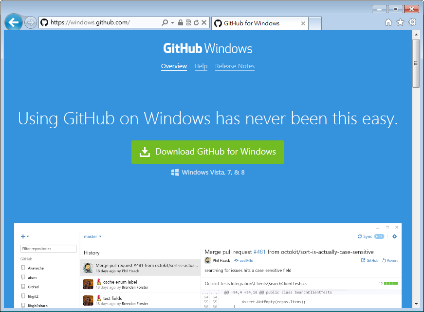
- 下載完後執行安裝程式『GitHubSetup.exe』，如果電腦已經安裝過GitHub Windows，執行後會直接啟動GitHub Windows程式；若沒安裝過，執行後會檢查電腦所需要的元件，如下圖在第一次安裝由於電腦中沒有『Microsoft .NET Framework 4.5(x86 and x64)』這個元件，會要求安裝，點選下方的『Accept』即可
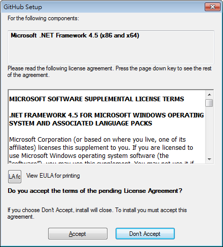 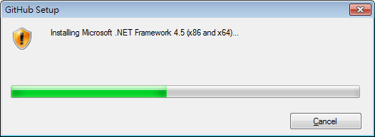
- 如果作業系統已安裝過『Microsoft .NET Framework 4.5(x86 and x64)』元件，執行後就直接出現GitHub安裝視窗，直接點選『Install』開始安裝
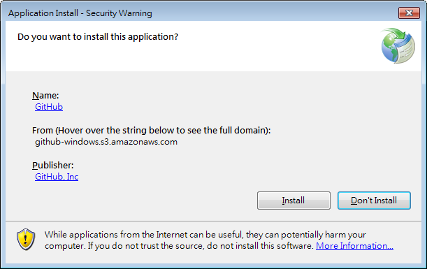
- 下圖為下載及安裝進度視窗，執行完就安裝成功
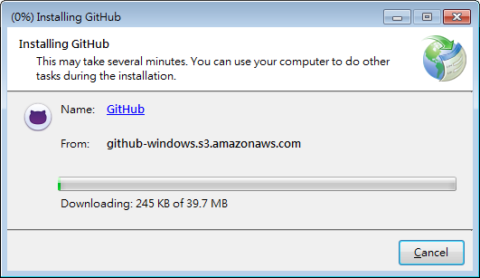
- Connect，安裝完第一次執行GitHub Windows的畫面如下，輸入GitHub帳號及密碼，點選『Log in』登入與GitHub平台連線
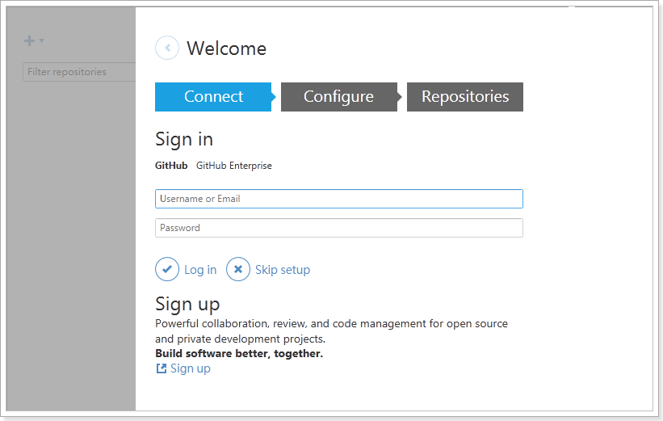
- Configue，設定git顯示的使用者名稱及E-Mail帳號，輸入完點選『Continue』
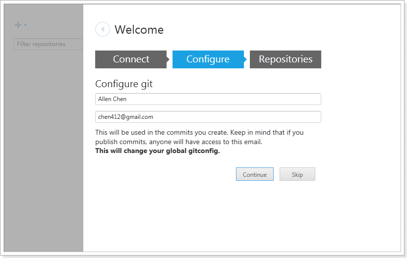
- Repositories，這一步軟體會自動尋找本機的儲存庫(Repo)，如果沒有找到，直接點選『dashboard』，進入軟體主畫面。
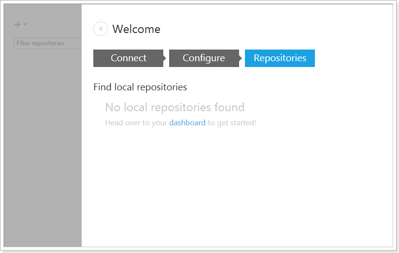
存取 Github Repo¶
複製Clone Repo¶
- 當安裝完GitHub Windows後，在還沒有複製(Clone)儲存庫(Repo)的狀況下，會看到如下面GitHub初始畫面，啟動後是很乾淨，什麼都沒有，只有在畫面中出現『Get started by adding a repository.』
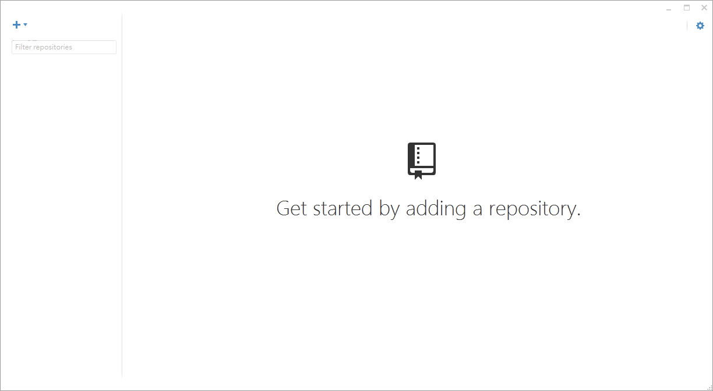
- 接下來點選左上角的『+』後會出現一個功能視窗，這個視窗主要的功能就是新增儲存庫(Repo)，可以看到視窗最上方有兩個選項『Creat』和『Clone』, 下圖為『Create』的畫面，設定Name和Local path後，點選下方的『Create repository』，就可以在所選的本機資料夾路徑中建立一個新的Git儲存庫(Repo)，最後可以使用Git Windows軟體發佈到GitHub平台所註冊的帳號中。
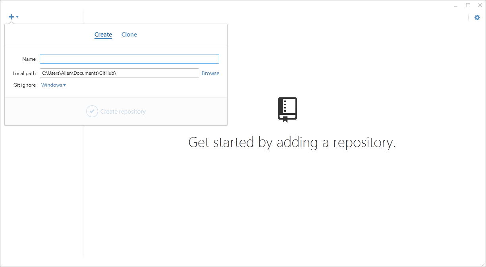
- 下圖為『Clone』的畫面，當點選到『Clone』後，下方會自動載入安裝時所登入的GitHub帳號中所有的儲存庫(Repo)
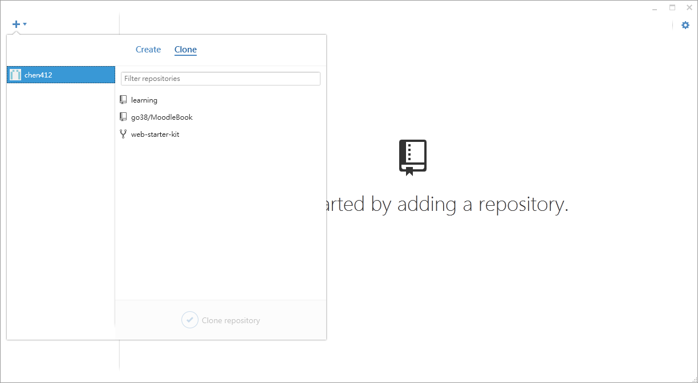
- 只要點選名稱，如『go38/MoodleBook』，再點選下方的『Clone repository』
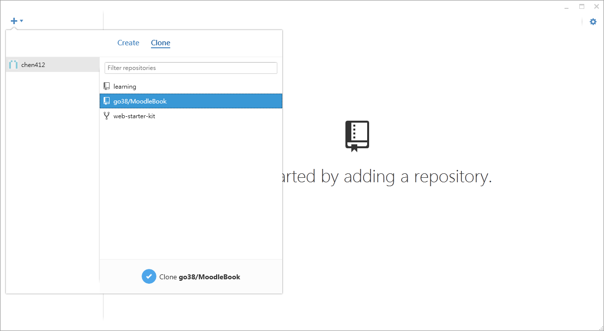
- 在複製(Clone)之前會出『瀏覽資料夾』的視窗，在此處點選儲存庫(Repo)要放在資料夾，如畫面中為預設的路徑(C:/Users/使用者名稱/我的文件/GitHub)
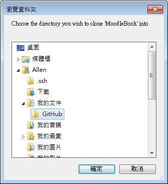
- 確認資料夾後就會開始複製(Clone)到本機電腦，完成後會看到如下的畫面，畫面主要分為三個區塊，左邊為本機的儲存庫(Repo)，如果有多個儲存庫(Repo)可點選做切換，而中間的『History』就是依左方所點選儲存庫(Repo)的歷史推送(Push)記錄，點選中間的歷史推送記錄後，在右方會顯示該次的異動內容，另外在『History』上方有個『master』，這為目前的分支(Branch)名稱，點選後可以切換分支或建立新的分支。
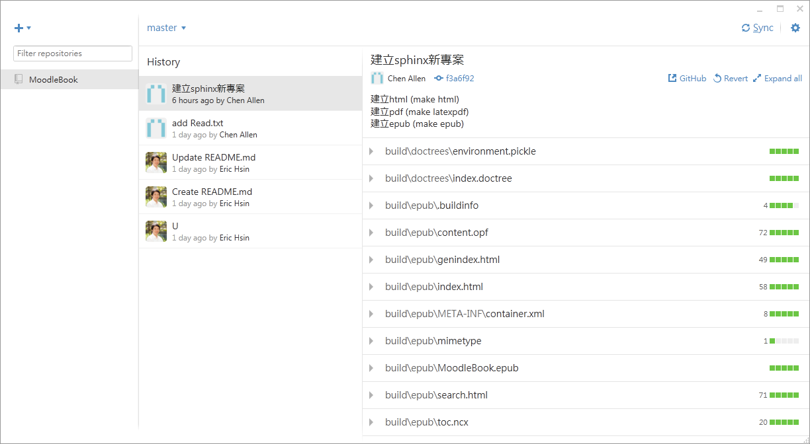
檔案新增刪除修改¶
- 把共筆的儲檔庫(Repo)複製(Clone)到本機資料夾中後就可以開始編寫內容，當想把編寫好的內容放到遠端時，如果是使用Git Shell文字模式的狀況下，需要自行輸入指令，如要把新增的檔案加到儲存庫(Repo)則輸入「git add .」，「git add filename」，若要把該檔案從儲存庫中刪除，使用「git rm filename」，那如果使用TortoiseGit軟體，也需要在該檔案點選右鍵去找到新增或刪除該檔案的功能選項，但使用GitHub Windows軟體，不需要在要新增或刪除的檔案去操作功能選項，也不需要自行下Git指令，只要打開GitHub Windows軟體，它會自動把檔案異動內容做處理並顯示在軟體中，如下圖的『Uncommitted changes』，將還沒有提交(Commit)前的異動內容顯示於此區塊。
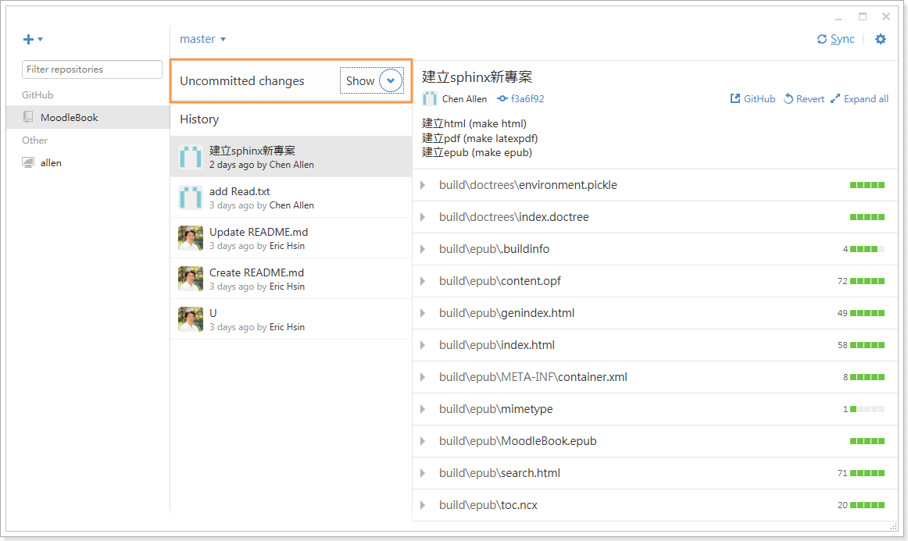
提交 Commit Repo¶
儲存庫(Repo)中的檔案異動完畢，可以點選『Show』，下方會出現摘要簡介(Summary)及說明(Description)，至少要輸入摘要簡介(Summary)這個輸入欄位，讓其他編輯者了解此次提交(Commit)的目的，那如果要寫的比較詳細，請填寫說明(Description)的輸入欄位，如果在提交前想要看一下檔案的異動詳細內容，可在右方的區塊看到所列出的檔案，每個檔案都可以點選觀看該檔案的修改內容減號『-』代表刪除，加號『+』代表新增，填寫完並且確認完檔案後點選下方的『Commit to master』即可，「master」是分析的名稱。
上面的操作轉換到Git Shell文字模式下，需要輸入『git commit』，然後會自動在文字編輯器下開起一個檔案，需要在上面輸入這次提交(commit)的訊息，最後儲存檔案結束，如果要快一點的話可以用『git commit -m “摘要簡介(Summary)”』即可，此外可以執行『git status』列出此次提交的檔安異動狀況。
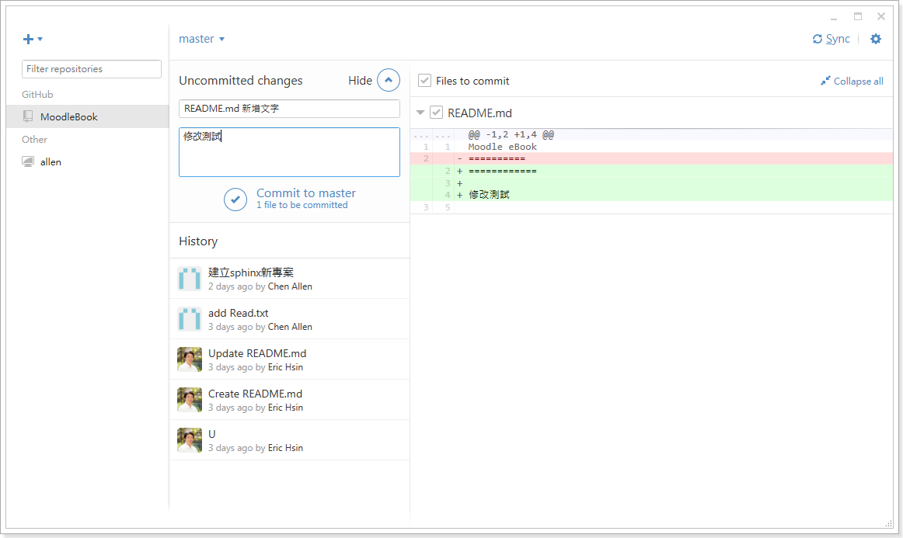
- 當點選『Commit to 分析名稱』後，『Uncommitted changes』的文字就會轉變成『Unsynced changes』，那右上方的『Sync』後方就會出現一個數字，該數字代表本機的儲存庫(Repo)執行了幾次的提交(Commit)動作，並且尚未推送(Push)到遠端伺服器中。下方有個『Undo』的按鈕，可以取消這一次的提交(Commit)動作。
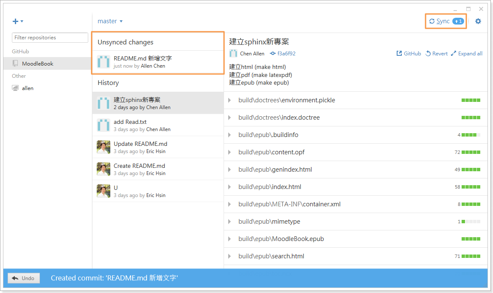
推送 Push Repo¶
在軟體畫面右上方的『Sync』後方有數字出現，代表有提交(Commit)動作，而且尚未執行推送(Push)，使用GitHub Windows執行推送(Push)也是非常的簡單，只要在『Sync』上點選一下，就會自動推送到遠端的伺服器中，完成推送(Push)後，『Unsynced changes』下的項目內容就會出現在『History』中，而且『Sync』後方的數字也會不見。
這個『Sync』的動作，在Git Shell文字模式下，就是輸入Git指令『git push』。
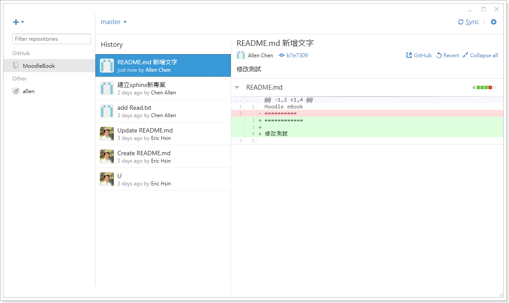
存取 Go38 Git Repo¶
使用GitHub Windows存取GitHub平台的存取很簡單方便，因為GitHub Windows本來就是專為GitHub平台操作使用的軟體，那如果要操作其他Git伺服器的儲存庫(Repo)，例如Go38伺服器上的Git儲存庫(Repo)，要如何操作使用呢？以下會說明該如何操作，主要有幾個步驟和GitHub Widnwos不同，如下
寄送公鑰(Public Key)¶
- 因為在安裝GitHub Windows軟體時，會自動產生一組公鑰「github_rsa.pub」與私鑰「github_rsa」在使用者家目錄下的「.ssh」資料夾中，打開「.ssh」資料夾，將公鑰「github_rsa.pub」複製一份，然後變更檔案名稱，然後將該檔案傳送給Go38管理者，將會使用此公鑰建立使用者。
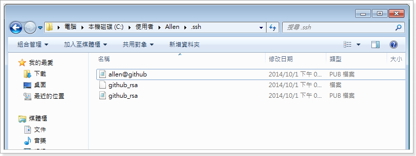
複製Clone Repo¶
- 當使用者建立完成後要複製(Clone)Go38上的儲存庫(Repo)，這裡的操作方式和GitHub平台不同，GitHub Windows可以直接使用GitHub的帳號登入並直接點複製(Clone)，但這裡我們需要使用Git Shell的文字模式執行『git clone git@allen.go38.net:MoodleBook.git』，將Go38上的MoodleBook儲存庫(Repo)複製(Clone)到本機電腦中，如下圖
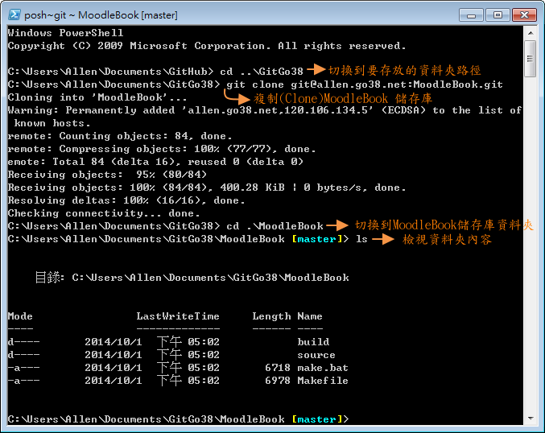
加入至GitHub Windows¶
打開GitHub Windows軟體，怎麼看好像都沒有方法可以加入從別的伺服器中複製(Clone)下來的儲存庫(Repo)，在這有找到兩種加入的方法，如下
方法一：Scan for repositories¶
- 點選GitHub Windows右上角的齒輪(tools and options)，點選功能選單中的『Options...』
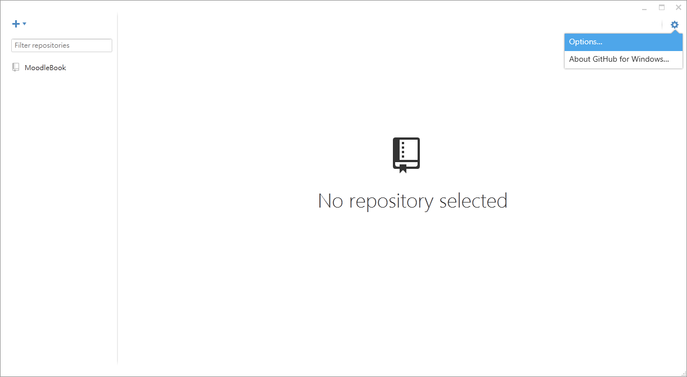
- 點選後會出現如下圖的Options視窗，尋找畫面中的放大鏡圖案『Scan for repositories』，並點選它
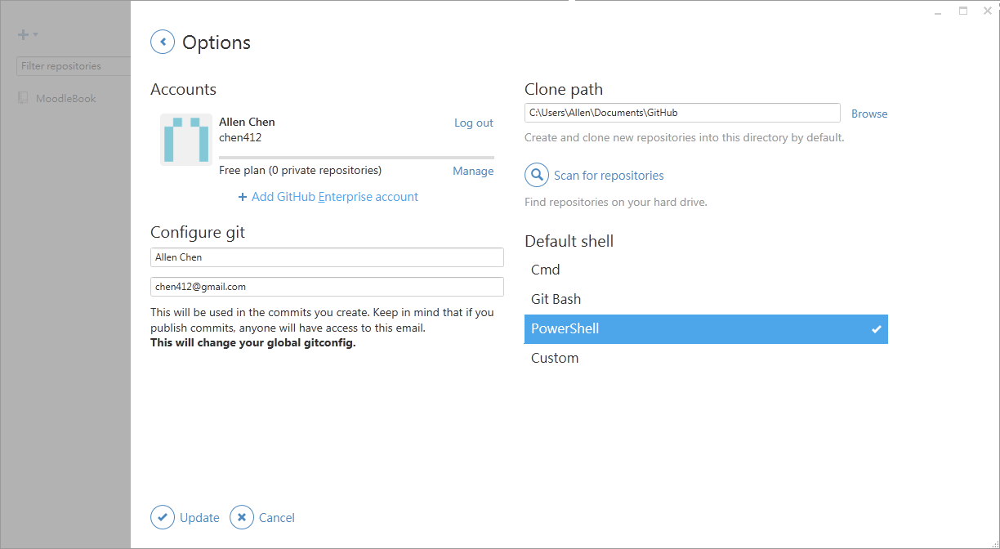
- 此時就會出現如下圖『Scan for repositories』的畫面，畫面中會出現在本機所找到的儲存庫(Repo)，經過測試GitHub Windows只會找使用者家目錄「C:Users使用者名稱」以下的資料夾，如果是放在其他資料夾下沒辦法被自動搜尋到的儲存庫(Repo)可使用方法二加入。
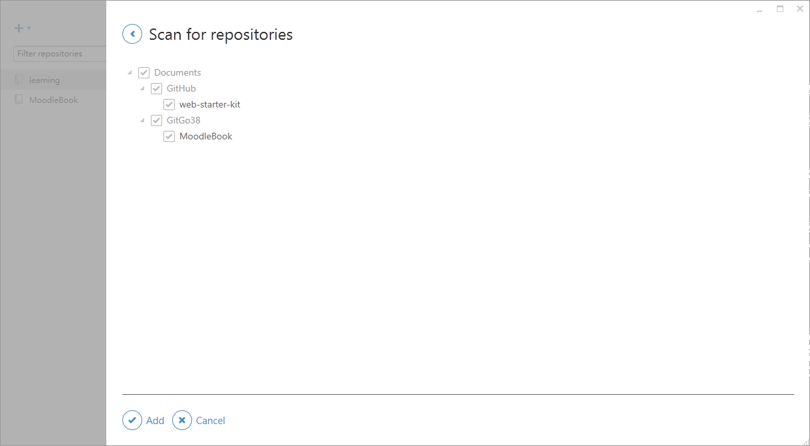
- 在本機電腦中可能有很多的儲存庫(Repo)，如下圖就有找到兩個，預設都是勾選的，因為只要加入MoodleBook，所以把其他的儲存庫(Repo)取消勾選後，再點選下方的『Add』
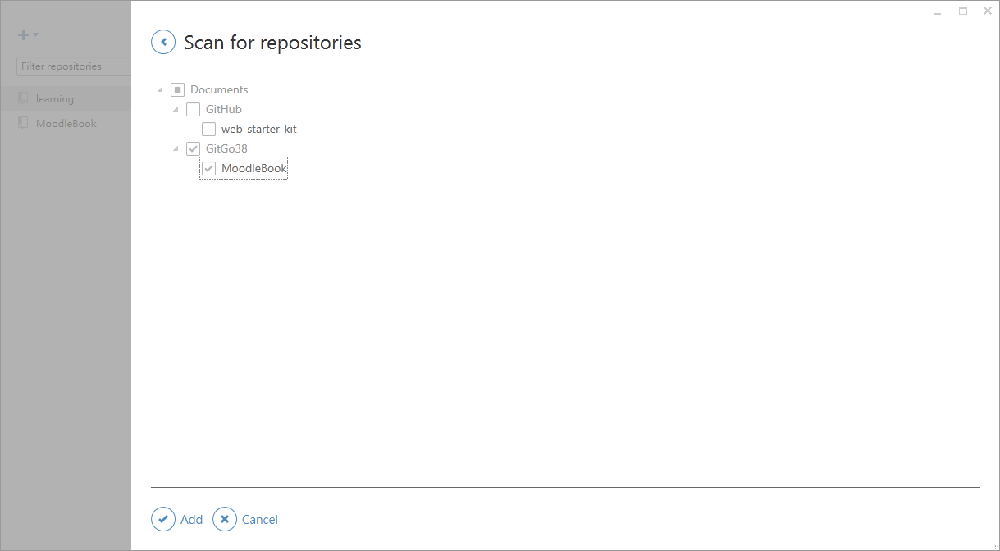
- 下圖為加入Go38的MoodleBook存儲庫(Repo)後的狀況，會發現所加入的MoodleBook存儲庫(Repo)會放在標籤『Other』下方，而GitHub的儲存庫會被歸類在『GitHub』標籤下
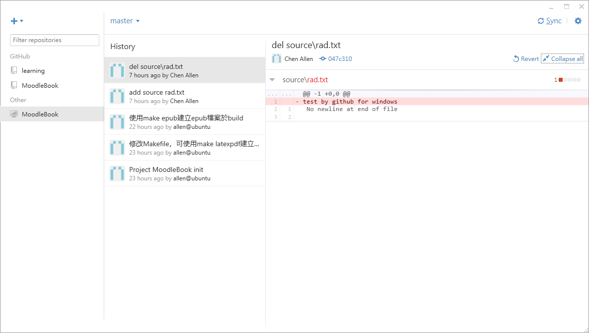
方法二：拖曳資料夾¶
- 第二種方法最簡單，只要打開檔案管理員，找到存放儲存庫(Repo)的資料夾，然後點選滑鼠左鍵不放，然後拉動拖曳儲存庫(Repo)的資料夾到GitHub Windows上，會看到出現『Drop to add repository』，然後放開滑鼠左鍵即可
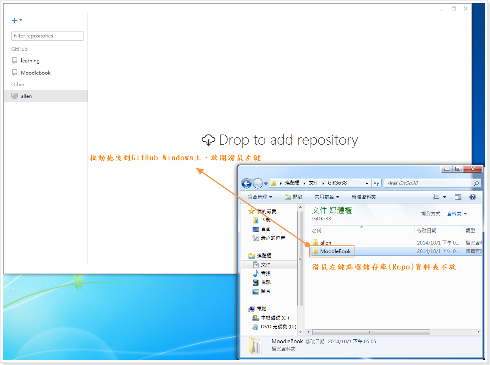
- 接著看到MoodleBook已經被加入到『Other』標籤下
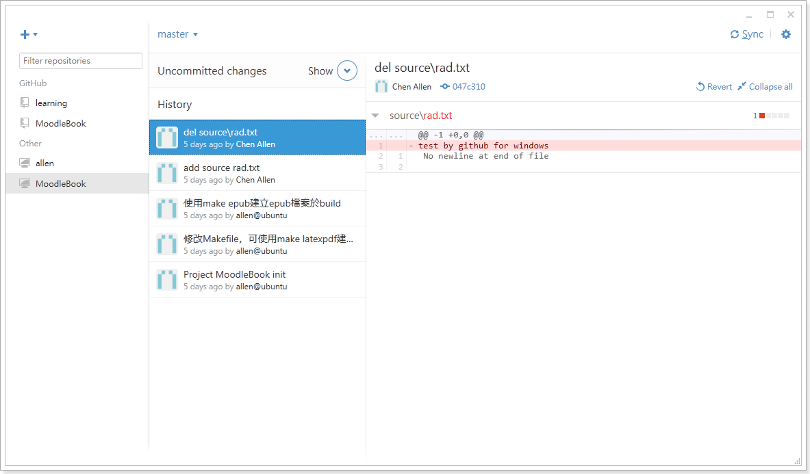